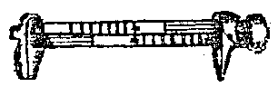
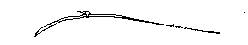
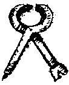
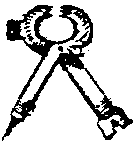

Glossary of Footwear Terminology, M-N
Maker (Shoe Man)
The person who assembles the shoes, actually attaching the uppers to the soles. [Devlin,
1840]Making
Attaching the overleather to the soles.
Making Thread
Aligning a number of strands of hemp, or flax, and cering them with Shoemaker's
Wax, and twisting them. [Rees, 1813]
Marginal Loops
Loops through which straps pass near the sole edge. [Webber, 1989]Mark
A cut made in the top sole for the top-sole seam. [Vass]
Marks of production
Signs or impressions left by the manufacture of leather or shoes, e.g. tanner's cuts
or awl scratches. [Goubitz, 2001]
Marks of use
Signs of wear made after the shoe was made, for example, spots of wear and tear, cuts to
improve the shoe's fit and smears of tar, paint etc. [Goubitz, 2001]
Measure
Holme shows this as

[Holme, 1688]Measurement taking
The recording of the most important data relating to the foot in order to draw up the
necessary foot documentation. It should take place at a time when the feet are in an ideal
state. The measurement-taking process has a ceremonial character. [Vass]
Medial
Of the inside of the foot, shoe or last; of the side facing the other foot.. [Goubitz,
2001]
Middle Sole
See Midsole
Middle-sole seam
The seam holding the welt and the middle sole together. [Vass]Middle Ages
A term used, first in the Enlightenment, to describe that period between the Dark
Ages that came from the collapse of the Classical Era and the "Renaissance", or
rebirth of Knowledge. Today, while these terms are often still used, the intellectual
value judgements they imply are not as widely accepted. For example, the Dark Ages are
often generally referred to as the "Early Middle Ages".
Midsole
- An additional sole placed between outsole and insole. [Thornton/Swann, 1983]
- The sole layer or any of the sole layers Found between the insole and treadsole
(outsole). [Goubitz, 2001]
- In Modern shoes, A layer of cushioning pancaked between the insole and the outsole.
[www.eastbay.com/help/glossary]
- Middle Sole. A sole between the welt and the top sole. Characteristic of double-soled
shoes. [Vass]
- Middle Sole [Holme, 1688]
Moccasin (Hudsko or Hide shoe, One piece-shoe, single piece-shoe)
A term commonly used to refer to a single piece construction, in which the soft sole and
the upper, or part of the upper, are continuous, producing a type of "foot bag".
The material passing upwards from under the foot is cut in such a way as to form a well
constructed foot covering with a back seam and often also a center front seam. A soft
leather shoe without a heel. A reinforcing sole may be added. The term is of Algonquian
origin and should not be used to refer to Medieval Shoes.. Variant terms are
moccasin-boot: referring to a) a moccasin extending above the ankle; b) a moccasin with a
cuff or a legging sewn on extending above the ankle; or c) a moccasin sewn to a material
made of several pieces extending above the ankle; modified moccasin boot: A boot where the
seam joining the soft bottom unit to the soft upper runs l-3 cm above the imprint line all
around the foot, with no center front or back seam. Alternatively, the boot may have a
sole which is flat; moccasin trousers (trouser moccasins): A combination garment which
includes trousers and moccasin-boots. [Thornton/Swann, 1983][Webber, 1989]Mock up
(Modern terms include:
Fitter, Fitter's model, Glass Slipper)
A cheap, quickly made shoe meant to test the shape and size of a given last,
checking patterns, etc.
Model
The total shape, cut, and style of a shoe. [Goubitz, 2001]
Mounter
A tool for slickening stitches. See Bones and Sticks
Muleus
A type of shoe.
Possibly the same as the backless shoe later called a mule.Murdering Leather
To waste leather by inefficiently or poorly cutting out leather. [Devlin, 1840]
Mutant
A different make of a standard product; may well be unique. [Goubitz, 2001]Nail Shoe
Nails, apart from those on Roman footwear, were used as a construction method only after
1800. Some repair soles are attached with nails. [Goubitz, 2001]
Nailed Construction
- A method of shoemaking in which the Sole is nailed to the Insole, the Upper (q.v.) being
sandwiched between sole and insole. If the nails, called hobnails, have large heads
they also serve as a sole protection. Commonly found in Romano-British shoes then not
clearly documented again until the 19th century [Thornton/Swann, 1983][Saguto]
- A method of fixing the uppers to the bottom by using thin nails instead of stitching
(See Sole/Upper constructions). [Goubitz, 2001]
- A method of shoemaking in which the upper is nailed to the bottom, the lasting margin
(q.v.) being sandwiched between outsole and insole.
Nailing last
An iron sole shape or a wooden last with iron plating on the sole side for the
production of nailed sole constructions. [Goubitz, 2001] (See Repair Last)
Needle
Needles have probably
been used in shoemaking all along, although their recorded uses have generally
been for closing work, such as attaching linings, cording, and so on.
.

Neutral
A modern term. Neutral runners have arches around medium height, they strike the ground at
the outside of the heel, and they push off with the big toe.
[www.eastbay.com/help/glossary]
Nippers, Shoemaker's nippers.
Holme shows two sorts
of Nippers: The Shoemaker's Nippers (With a sharp point on one side, and a tack puller on
the other):

and Hammer
Pincers (with a tack puller, a hammer head, a sharp point, and is toothed to grip leather
better): 
[Holme,
1688]
Return to Contents or [Next]
Footwear of the Middle Ages - Glossary of Footwear Terminology M-N,
Copyright � 1999, 2000, 2001, 2005 I. Marc Carlson.
This page is given for the free exchange of information, provided the author's name is
included in all future revisions, and no money change hands, other than as expressed in
the Copyright Page.